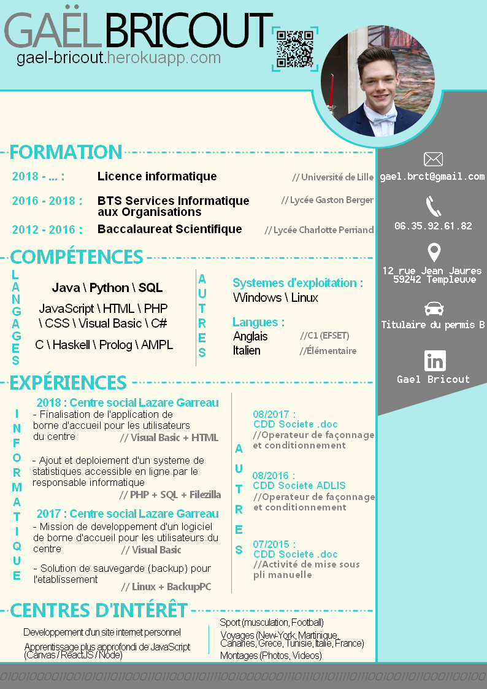

<div id="container-titre-footer">
  <h1 id="footer-pres">En savoir plus</h1>

</div>
<div id="container-footer">
  <div id="container-all-footer">
    <div id="container-cv" class="content-footer">

      <div id="titreContenu">
          Pour voir mon CV :
      </div>
      <div id="contenuExperience">
        <div id="voirPDF" class="btn">Voir mon CV</div>
      </div>
      <div id="contenuExperience">
        <a href="../../../assets/img/BRICOUT_GAEL_cv_pdf.pdf" id="linkExp" download='BRICOUT_GAEL_CV.pdf' class="btn">Télécharger le PDF</a>
      </div>


    </div>
    <div class="content-footer" id="readme"> Ce portfolio est réalisé exclusivement dans le but de m'entrainer,
      et d'apprendre de nouveaux langages. Il s'agit là d'un site qui me sert d'outil avant tout,
       qui est donc largement susceptible de changer et d'être modifié.
      <br>
      Il a été réalisé entièrement en JS(Angular)/HTML/CSS.
      <br>
      La prochaine étape est l'apprentissage de NodeJS, pour créer une section d'envoi de mail dans "contact".
    </div>
  </div>


</div>
<div class="modal" id="modalCV">

  <div class="modal-content">
    <div class="close-modal" id="close-modal">
      <div id="p">X</div>
    </div>
    
  </div>

</div>
